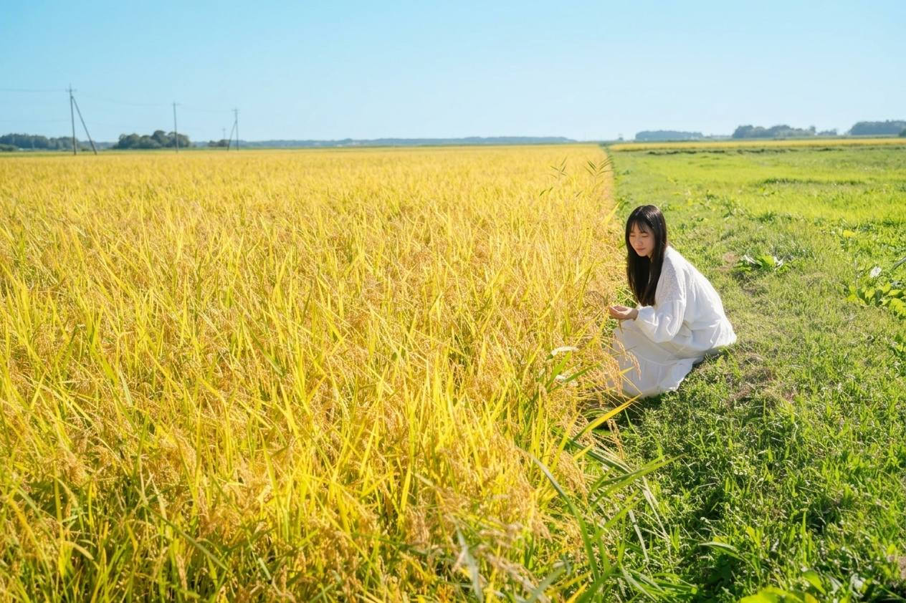
ひとめぼれ
牛にも米にも
Roots & Hoofs · Yoshida Farm
岩手県紫波町・吉田ファームのひとめぼれ
Roots & Hoofs 吉田ファームは、岩手県紫波町で牛と米の循環型農業に取り組む農園です。米のわらともみ殻を牛の寝床に使い、堆肥として田んぼに還しながら、品種「ひとめぼれ」を育てています。
- 生産者
- Roots & Hoofs 吉田ファーム／吉田 辰巳
- 産地・品種
- 岩手県紫波町／ひとめぼれ
- 栽培の取り組み
- 牛と米をつなぐ循環型農業。堆肥を活用し、化学肥料を減らす取り組み。
- ご予約・お問い合わせ
- 電話・メール・Instagramの連絡先を見る
販売状況やご予約については、Instagramの最新情報をご覧いただくか、農園へ直接お問い合わせください。
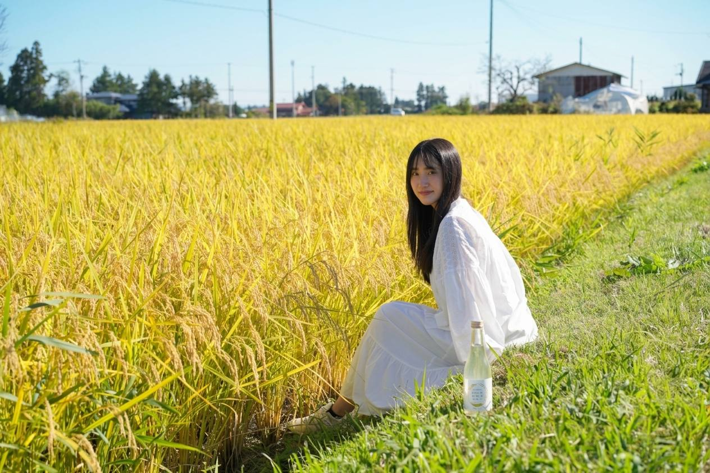
田んぼに、
ひとめぼれ。
Love at first sight, in the golden fields.
黄金色に染まる稲穂を前にすると、毎年、同じ言葉が浮かびます。ひとめぼれ。
この米を育ててくれる牛にも、この土地にも。品種の名前は、私たちの気持ちそのものです。
まもなく、今年の実りを収穫します。
牛と米が、
めぐり続ける。
Circular agriculture in Shiwa, Iwate.
岩手県紫波町における循環型農業の取り組み
米を収穫したあとに残るわらともみ殻は、牛の寝床になります。牛の寝床は、良質な堆肥になります。堆肥は田んぼに還り、また米を育てます。
牛とともに暮らし、田に汗して。化学肥料を減らしながら、悠久の昔から変わらない営みを、地球にも、土にも、河川にも、空気にもやさしいかたちで続けています。
We are farming while living with cows.
Circular agriculture is kind to the earth.
昔ながらのものづくりが
今も続く理由は、
「おいしい」からです。
Because it’s delicious.
南部杜氏発祥の地、
酒のまち紫波。
Shiwa, Iwate — where the Nambu Toji brewers began, the town of sake.
We want to provide the experience of tasting the local soil and water.
わたしたちのものづくりは、紫波の味となります。
地元の土と水だけで育てる米は、身体に染み入る味を失いません。紫波の風土そのものを、ひと粒ずつ味わっていただきたいと思っています。
私たちは、本州の北限にあたる作物栽培に挑戦しています。冷涼なこの地で育つひとめぼれは、その挑戦のいちばん確かなかたちです。
本州北限に挑戦Challenging the northern limit of Honshu
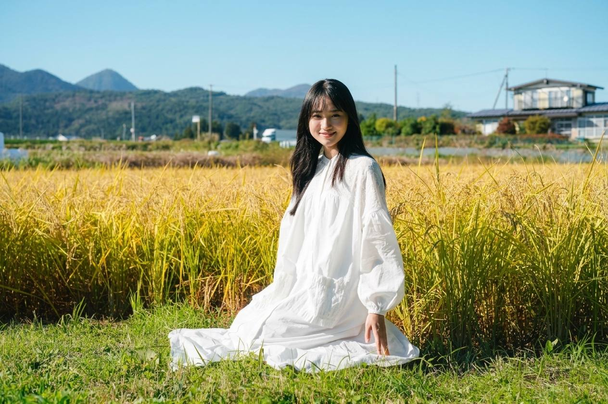
About Us
わたしたちの想い
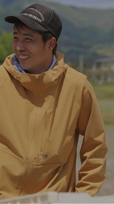
牛とともに暮らし、田に汗して農業を行ってきました。
現在のSDGsなど、サステナブル、再生可能な仕組みが求められる中、わたしたちの作る・創る・造ることは、悠久の昔から変わらない、地球に、土に、河川に、空気にやさしいモノであると確信しています。
そして、昔ながらのものづくりが今も続く理由は、「おいしい」からです。
地元の土、水を使用した、身体に染み入る味を失うことなく、これからも「牛」と「米」のサイクルを廻し続けていくことが、わたしたちの使命です。
We have lived with cows and worked the fields by hand.
As the world calls for sustainable and renewable ways of living, we are convinced that everything we raise, create and craft is, as it has been since time immemorial, kind to the earth, the soil, the rivers and the air.
The reason traditional farming continues even now is simple: it is delicious.
Using local soil and water, and never losing the flavor that settles into the body, our mission is to keep the cycle of beef and rice turning.
牛にも米にも、ひとめぼれ。 吉田 辰巳
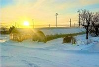
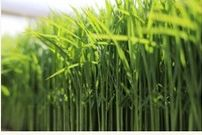
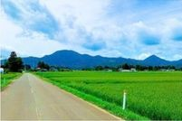
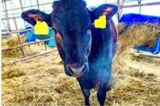
実りの季節。
The season of the harvest.
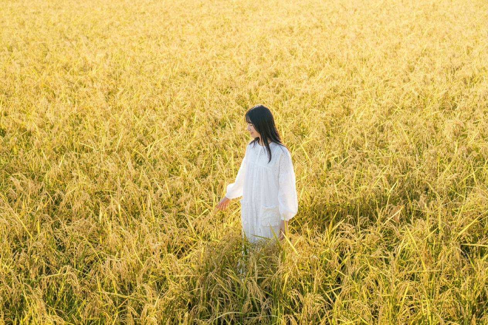
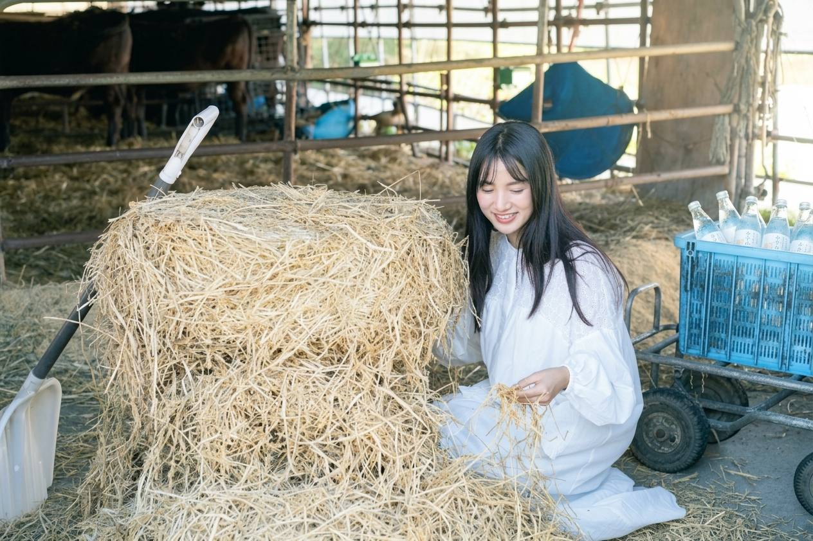
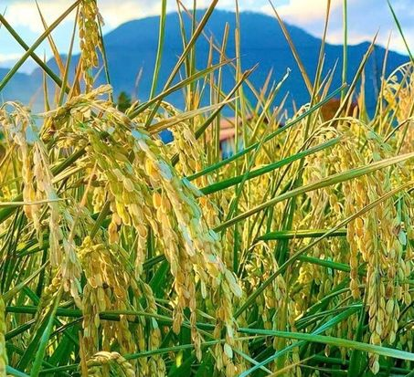
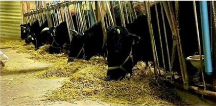
よくある質問。
Frequently asked questions.
この”ひとめぼれ”はどこで育てていますか？Where is Hitomebore grown?
岩手県紫波町です。南部杜氏発祥の地として知られる酒のまちで、地元の土と水を使って育てています。
In Shiwa, Iwate, the town of sake and the birthplace of the Nambu Toji brewers, using local soil and water.
循環型農業とはどんな取り組みですか？What is circular agriculture at Yoshida Farm?
米のわらともみ殻を牛の寝床に使い、牛から良質な堆肥をつくって田んぼに還します。化学肥料を減らしながら、牛と米のサイクルを廻し続けています。
Straw and rice husks bed the cattle, the cattle produce quality compost, and the compost returns to the paddies. The cycle reduces chemical fertilizer.
ご予約・お問い合わせの方法は？How can I reserve?
お電話（090-3681-6684）、メール（yoshida.tatsumi.315@gmail.com）、Instagram（@yoshida__farmer）で承っています。
By phone (090-3681-6684), email (yoshida.tatsumi.315@gmail.com) or Instagram (@yoshida__farmer).
今年のひとめぼれ、
ご予約受付中です。
Reservations are now open.
収穫を前に、ご予約を承っています。ご予約はお電話、メール、Instagram（QRコード）のいずれかからお寄せください。
Instagramを見る